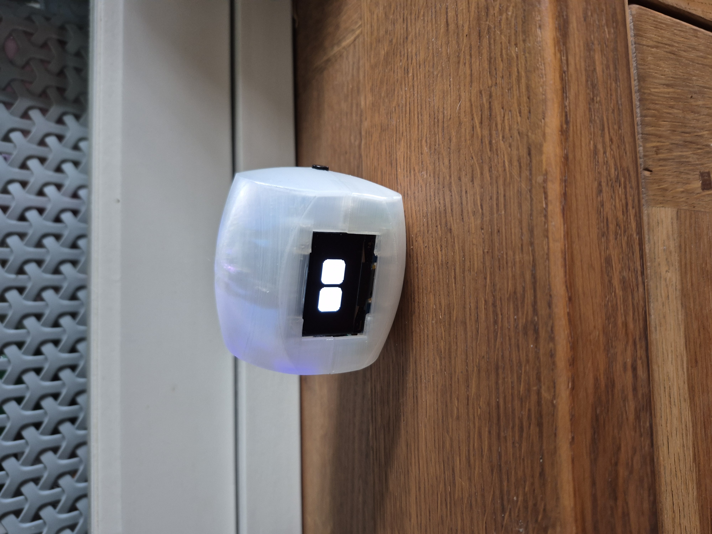

Robotics prototype
Expressive desk companion robot
Buddi demonstrates practical engineering across enclosure design, embedded electronics, interaction design, and build iteration. It is the clearest example of the kind of robotics work I want to keep developing.
ESP32
OLED UI
CAD-led build